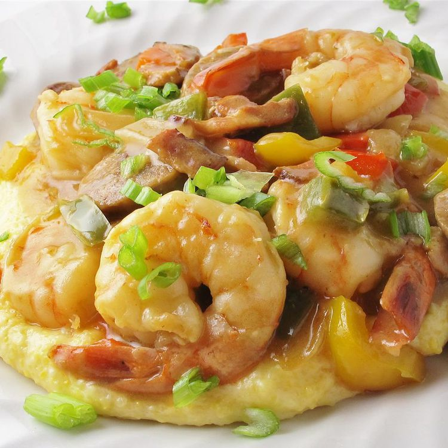

Cheesy Shrimp and Grits

Description
Here's another quick and simple recipe! Cheesy Shrimp and Grits is a excellent choice to eat for breakfast
Ingredients
- 4 cups water
- salt and ground black pepper to taste
- 1 cup stone-ground grits
- 2 cups shredded sharp Cheddar cheese
- 3 tablespoons butter
- 1 pound shrimp, peeled and deveined
- 6 slices bacon chopped
- 1 cup thinly sliced scallions
- 2 tablespoons chopped fresh parsley
- 1 large clove garlic, minced
- 4 teaspoon lemon juice
Steps
- Bring water to a boil in a pot over high heat. Add salt and pepper. Stir in grits; reduce heat and let simmer until water is absorbed, 20 to 25 minutes. Remove from heat and stir in Cheddar cheese and butter. Cover and set aside.
- Rinse shrimp and pat dry.
- Place bacon in a large skillet and cook over medium-high heat, turning occassionally, until evenly browned, about 10 minutes.Drain bacon slices on paper towels.
- Heat remaining bacon grease in the skillet over medium heat. Cook shrimp until bright pink on the outside and opaque, 3 to 4 minutes. Add bacon,scallions,parsley,garlic, and lemon juice; cook for 3 minutes.
- Spoon grits into a serving bowl. Add shrimp mixture and mix well. Serve immediately.